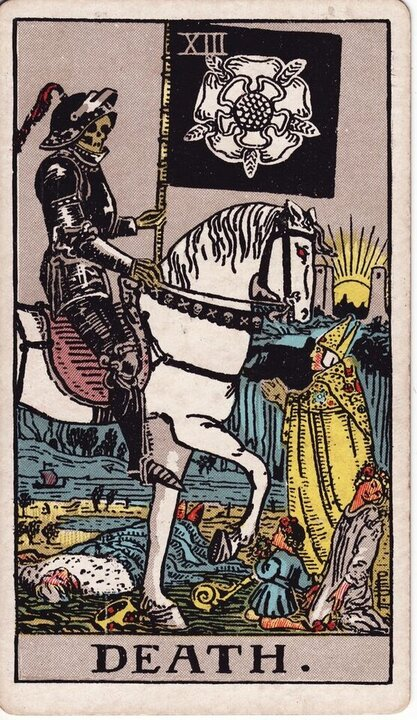

Major Arcana · Card 13
Death Tarot Card Meaning
Death is endings and transformation — rarely literal, almost always the close of one chapter so another can begin. Want to know what it means in your spread? Every reader on our line is hand-vetted — connect in under 60 seconds, $1 for your first minute, hang up anytime.
- Hand-vetted readers
- Available 24/7
- Hang up anytime

The Death Card — What It Shows
A living skeleton rides a horse while holding up a flag with a white pattern. The skeleton is dressed in armor, signaling invincibility and reminding us that no one can destroy death itself. The horse is white, representing purity. Beneath him, people from different walks of life lie in the dirt — a reminder that death doesn't differentiate between race, class, or gender. Despite its image, this is one of the most misunderstood cards in the deck: it is about transformation, not literal dying.
Death Upright Meaning
Upright, Death is a clean ending that clears space for what's next. As advice, it tells you it's time to move on and free yourself to join the sweep of incoming light. You may need to complete unfinished tasks, close accounts, harvest or release some old connections — all so you can move toward your ultimate interests. The ending is the doorway.
Death Reversed Meaning
Reversed, Death tells you to be patient with current circumstances without resigning yourself to a negative result. It asks you to persist and endure through a difficult situation even when the end is not soon. The transformation is delayed, not denied.
Death as Advice
As advice, Death counsels release: stop clinging to what is already over, finish what's unfinished, and let the ending happen so the new beginning it makes room for can arrive.
Death in a Tarot Reading
As a Major Arcana card it points to a significant theme, not a passing detail — and it's rarely literal. Its meaning sharpens against the cards around it, its position, and your question, which is what a live reading interprets for your situation. See all 22 cards on the Major Arcana meanings hub, or start a full phone tarot reading.
← The Hanged Man · Next: Temperance →
What Does Death Mean for You?
A meanings list is the map; a live reading is the territory. We'll connect you with the right hand-vetted tarot reader in under 60 seconds. $1/min first call · 15 minutes for $10 · hang up anytime · 100% satisfaction promise.
Call (888) 920-6662 NowDeath — Frequently Asked Questions
Does Death mean someone will die?
Almost never literally. It's about endings and transformation — closing what's done so something new can begin.
What does Death mean as advice?
Move on and free yourself — finish unfinished things, close accounts, and release what's over.
What does Death reversed mean?
Be patient without resigning to a bad result — persist; the transformation is delayed, not denied.
Is Death a bad card?
No — it's one of the most positive cards for change once you stop fearing the word. Context refines it.
Get Your Tarot Reading Now
Connected to a hand-vetted reader in under 60 seconds, the cards pulled on your real question, and you hang up with clarity.
Call (888) 920-6662